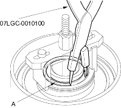
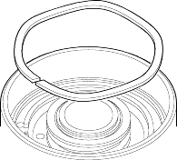
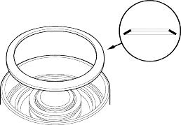
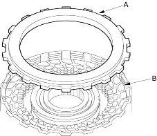

- Compress the return spring.

- Install the snap ring (A).

- Remove the special tools.
- Install the wave spring in the 1st, 3rd and 4th clutches.

- Install the disc spring in the 1st-hold clutch in the direction shown (7-position).

- Soak the clutch discs thoroughly in ATF for a minimum of 30 minutes. Before installing the plates and discs, make sure the inside of the clutch drum is free of dirt and other foreigNmatter.
- Starting with a clutch plate, alternately install the clutch plates and discs. Install the clutch end plate (A) with the flat side toward the disc (B).
